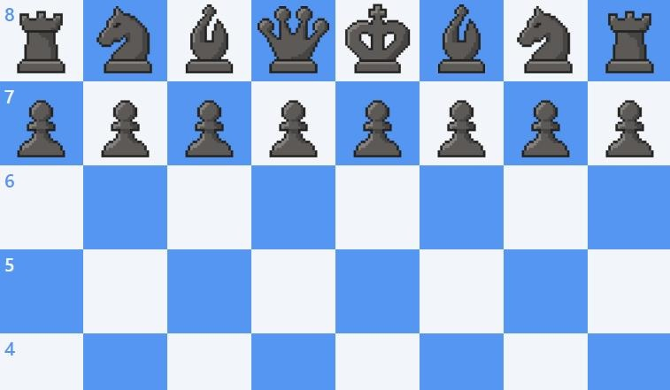
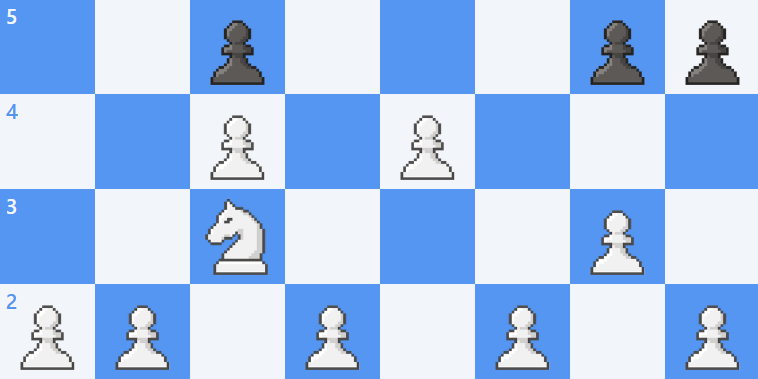
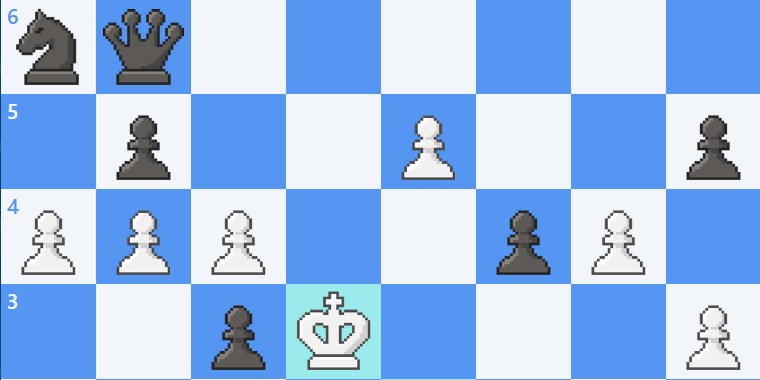
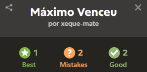
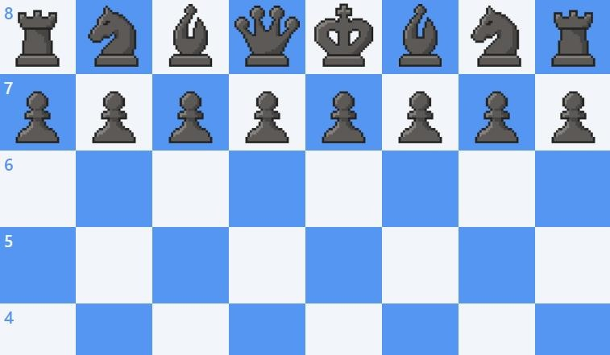
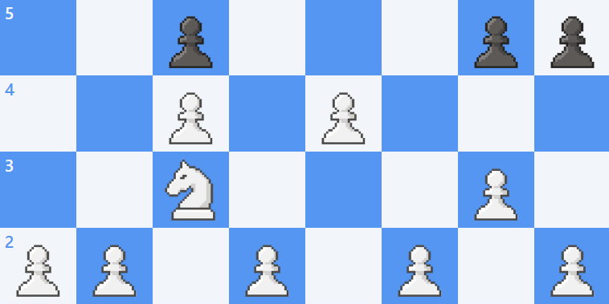
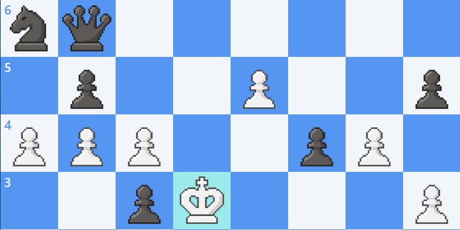
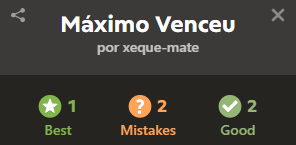

Sobre o Jogo
Resumo
Xadrez é um jogo de tabuleiro estratégico para dois jogadores onde objetivos táticos e posicionais
se alternam. O foco é controlar o centro, coordenar peças e criar planos que levem ao xeque-mate.
Regras básicas
- Cada jogador tem 16 peças: rei, rainha, duas torres, dois bispos, dois cavalos e oito peões.
- As peças movem-se de formas distintas; capturar peças adversárias remove‑as do tabuleiro.
- O objetivo é dar xeque-mate: colocar o rei adversário sob ataque sem saída legal.
Como jogar
Abra com princípios: desenvolver peças, controlar o centro e proteger o rei (rochada). Planeje
táticas (garfos, cravadas, descobertas) e estratégias de médio/longo prazo conforme a posição.
Dicas e Estratégias
- Desenvolva todas as peças antes de mover repetidamente a mesma peça.
- Faça rochada cedo para segurar o rei e conectar as torres.
- Procure fraquezas na posição do oponente e crie planos para explorá‑las.
Modos e treino
Jogue partidas rápidas, partidas por tempo clássico ou resolva táticas diárias. Estudar aberturas,
finais e resolver exercícios táticos acelera a evolução.
 






